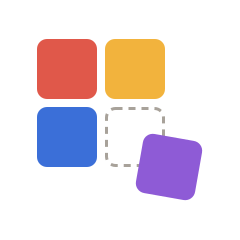

홈터
작업 파일로 저장
다른 컴퓨터에서 이어서 하거나 백업할 때 · Ctrl+S
작업 파일 불러오기
저장해 둔 .hometeo 파일 열기
내려받기
완성된 홈페이지 (사장님용 관리자 화면도 함께 받을 수 있어요)
빠뜨린 것 점검
견본 글 · 빈 링크 · 안 보이는 글자 찾기
견본으로 시작하기
카페 · 병원 · 학원 · 개인 소개
새로 시작하기
빈 페이지로 (되돌리기 할 수 있어요)
도움말
사용 안내 · 처음 길잡이 · 내려받은 다음엔? · 로그인 연결
홈터 1.0
불러오는 중…
되돌리기
다시하기
PC
휴대폰
나란히
새 탭 미리보기
내려받기
홈터는 PC에서 이용해주세요
끌어다 놓기는 넓은 화면에서 훨씬 편해요.
휴대폰에서 어떻게 보이는지는 PC의 미리보기로 확인할 수 있어요.